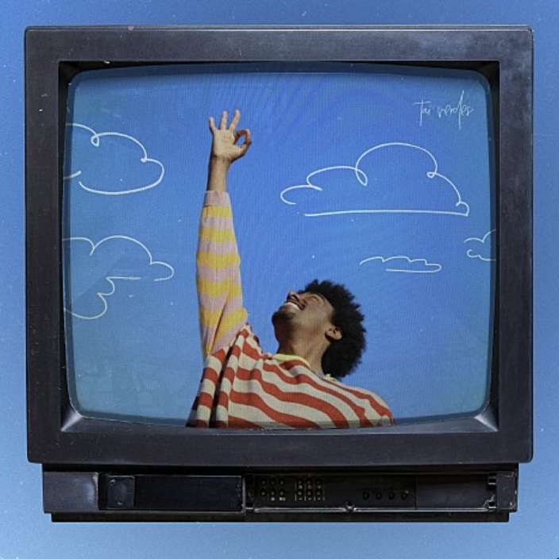

♥ Tai Verdes ♥
그는 "stuck in the middle"이라는 노래로 틱톡에서
인기를 얻었으며 이 노래의 뮤직 비디오는 유튜브에서 140만회 이상의 조회수를 기록했습니다
< 내가 좋아하는 tai verdes의 노래 >

← A-O-K ♬
앨범
: TV
발매
: 2021년 5월 20일
장르
: POP
♬ Sheesh! →
앨범
: Sheesh!
발매
: 2021년 8월 20일
장르
: POP